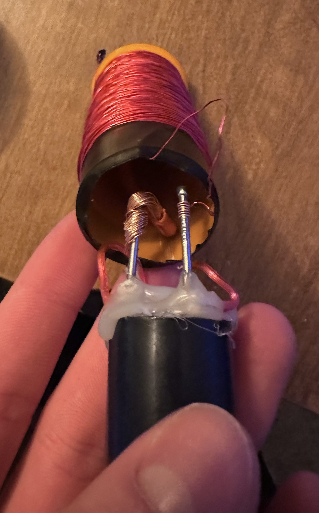
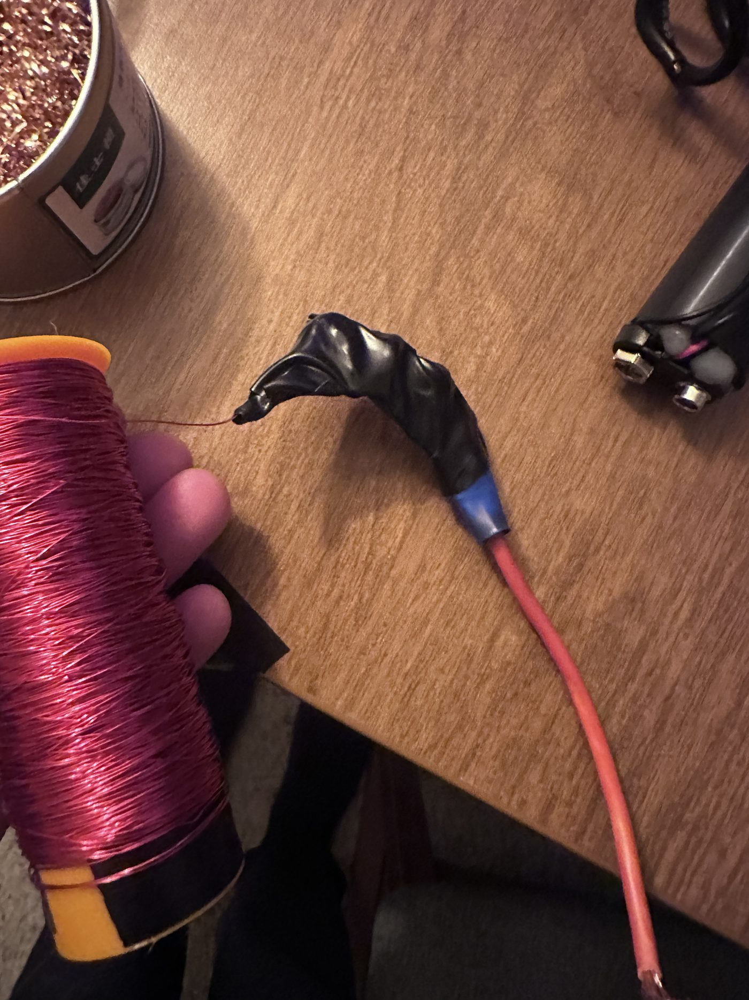
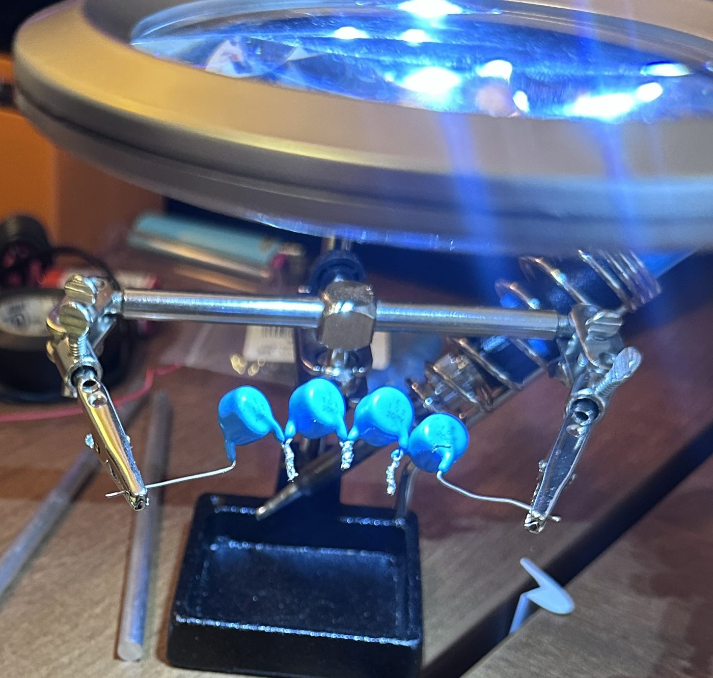

High Voltage · Magnetics · Team Project
Electromagnetic Pulse Demonstrator


- Source
- Single 9 V battery
- Converter
- DC step-up module
- Storage
- Four 20 kV ceramic capacitors
- Coil
- Hand-wound enameled copper on a 3D-printed tube
- Electrodes
- Nails, set in hot glue
- Team
- With Angel Avila Ponce and Ali Behbehani — Nov 2025
What it is
A capacitor-discharge demonstrator that produces a brief, intense burst of electromagnetic energy — the same phenomenon that happens naturally in a lightning strike, at a very much smaller scale. A pulse like this induces sudden voltage and current spikes in nearby conductors, which is how an EMP disrupts electronics.
The design brief was deliberately constrained: generate the pulse from a small battery, use 3D printing, keep the cost down, and make something safe to hold.
Reading the datasheet sceptically
The step-up converter we used was advertised at 250,000 V. We wrote it into the parts list with the note that this is "hard to believe" — and it is. A module of that size and price cannot produce a quarter of a million volts in any meaningful sense, and treating the marketing figure as a real specification would have meant sizing everything else around a number that doesn't exist.
Which is the actual lesson: a rating printed on a cheap component is a claim, not a measurement. The capacitors were chosen at 20 kV because that's a bound we could reason about, not because the converter's headline number said we could go higher.
Where it got difficult
Four things gave us trouble. Components kept being at risk of blowing, which shaped how conservatively we staged the charge. Deciding how many capacitors to use was a genuine trade — more stored energy against more stress on the converter and more danger in the hand. Getting the tube dimensions right mattered, because coil geometry sets the field you actually produce.
And winding the coil by hand took a very long time. There is no clever way around it; the turns go on one at a time, and the count and spacing determine whether the thing works at all.

On safety. "Safe to use in hand" was one of the four stated objectives, not an afterthought — hence the low supply voltage, the fully enclosed printed housing, and a deliberate charge-and-discharge sequence. A charged high-voltage capacitor stays dangerous after the supply is removed, and this was built and handled on that assumption.